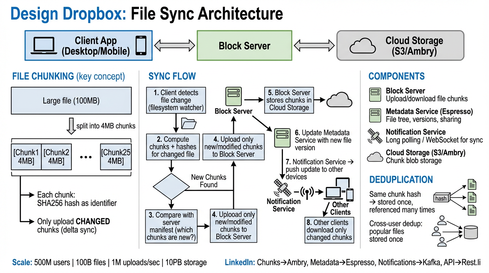

A deep dive into the architecture of a cloud file storage & synchronization system — chunking, delta sync, conflict resolution, and metadata at massive scale.
Problem Statement: Design a cloud file storage and synchronization service that allows users to store files in the cloud, sync them across multiple devices, and share them with others. The system must handle massive scale while ensuring data integrity, low-latency sync, and efficient bandwidth usage.
| Metric | Estimate | Derivation |
|---|---|---|
| Average file size | ~100 KB | 10 PB / 100B files |
| Chunks per file (avg) | 1 | Most files < 4 MB chunk size |
| Total chunks stored | ~150B | 100B files + versioning overhead |
| Metadata DB size | ~30 TB | 150B rows × 200 bytes/row |
| Upload bandwidth | ~100 GB/s | 1M uploads/sec × 100 KB avg |
| Daily new storage | ~8.6 PB | 100 GB/s × 86400s (before dedup) |
The system is decomposed into four major backend services, each with a single responsibility:
| Component | Responsibility | Key Tech |
|---|---|---|
| Block Server | Splits files into chunks, computes hashes, uploads/downloads blocks to cloud storage | SHA-256, CDC, S3/GCS |
| Metadata Service | Stores file tree, chunk manifests, user info, sharing permissions, version history | MySQL/PostgreSQL, Redis cache |
| Notification Service | Pushes real-time sync events to connected clients when files change | WebSocket, Long Polling |
| Cloud Storage | Stores raw file chunks with high durability and availability | S3, Azure Blob, GCS |

Files are split into fixed-size 4 MB chunks. Each chunk is independently hashed, stored, and transferred. This is the foundation of Dropbox’s bandwidth efficiency and deduplication.
| Property | Value | Rationale |
|---|---|---|
| Chunk size | 4 MB | Balance between metadata overhead (too small) and re-upload waste (too large) |
| Hash algorithm | SHA-256 | Collision-resistant; 256-bit hash = negligible collision probability at 100B+ files |
| Last chunk | ≤ 4 MB | Final chunk can be smaller; stored as-is |
| Chunk naming | Content hash | Content-addressable: sha256(chunk_bytes) is the storage key |
File: presentation.pptx (12 MB) ┌──────────┬──────────┬──────────┐ │ Chunk 0 │ Chunk 1 │ Chunk 2 │ │ 4 MB │ 4 MB │ 4 MB │ │ hash: a3 │ hash: 7f │ hash: e1 │ └──────────┴──────────┴──────────┘ Manifest: [a3f8c2..., 7fb41e..., e19d03...]
| Approach | Pros | Cons |
|---|---|---|
| Fixed-Size (4 MB) | Simple, predictable, fast | Byte insertion shifts all subsequent chunk boundaries → many chunks change |
| Content-Defined (CDC) | Insertion-resilient; chunk boundaries determined by content via rolling hash (Rabin fingerprint) | More complex, variable-size chunks, slower |
Dropbox uses CDC in production for better delta efficiency, but fixed-size is acceptable for interview scope.
When a user edits a 1 GB file and changes only a few bytes, the entire file does not get re-uploaded. The client:
Before edit: [chunk_A] [chunk_B] [chunk_C] [chunk_D]
After edit: [chunk_A] [chunk_B'] [chunk_C] [chunk_D]
↑
only this chunk changed
Upload: 1 chunk (4 MB) instead of full file (16 MB)
Bandwidth saved: 75%
[hash_A, hash_B, hash_C, hash_D][hash_A, hash_B', hash_C, hash_D]hash_B ≠ hash_B'chunk_B' to Cloud StorageBecause chunks are stored by content hash, if two users upload the same file (or the same chunk appears in different files), it is stored only once in Cloud Storage.
| Scenario | Without Dedup | With Dedup |
|---|---|---|
| 100 users upload same 100 MB file | 10 GB stored | 100 MB stored |
| Email attachment sent to 1000 recipients | 5 GB (5 MB × 1000) | 5 MB stored |
| OS installer across enterprise | 500 GB | 5 GB stored |
The Metadata Service maintains a reference count per chunk hash. A chunk is garbage-collected only when its reference count drops to zero.
Each Dropbox desktop client runs a filesystem watcher that monitors the synced folder for changes in real time. This is the entry point for all local-to-cloud sync operations.
| OS | Watcher API | Notes |
|---|---|---|
| macOS | FSEvents | Coalesced events, efficient for large trees |
| Linux | inotify | Per-directory watches; limited by max_user_watches |
| Windows | ReadDirectoryChangesW | Recursive watch support natively |
| Method | Mechanism | Tradeoffs |
|---|---|---|
| Long Polling | Client sends HTTP request; server holds it open until there’s a change or timeout (60s). Client reconnects immediately after response. | Simpler infrastructure, works through all proxies/firewalls, slightly higher latency |
| WebSocket | Persistent bidirectional TCP connection between client and Notification Service | Lower latency, less overhead per message, requires sticky sessions or connection state management |
Dropbox historically used long polling for its Notification Server due to simplicity and firewall compatibility. Modern implementations may use WebSocket for lower latency.
Two users (or two devices of the same user) edit the same file while offline or before sync completes. When both come online, the server has two divergent versions.
file (conflicted copy).extEach file has a version vector (or simpler: a monotonically increasing version number maintained by the Metadata Service). When a client pushes an update, it includes the base_version it was editing from. If base_version < current_version, a conflict is detected.
Client A: edit file v3 → upload → server accepts → file becomes v4
Client B: edit file v3 → upload → base_version=3 < current_version=4 → CONFLICT
→ Server creates "file (Client B's conflicted copy)" as v5
The Metadata Service uses a relational database for strong consistency guarantees. Below are the core tables that power file storage, versioning, chunking, and sharing.
| Column | Type | Description |
|---|---|---|
user_id | BIGINT PK | Unique user identifier |
email | VARCHAR(255) | Login email, unique index |
display_name | VARCHAR(128) | Display name |
quota_bytes | BIGINT | Storage quota (e.g., 2 TB) |
used_bytes | BIGINT | Current storage usage |
created_at | TIMESTAMP | Account creation time |
| Column | Type | Description |
|---|---|---|
file_id | BIGINT PK | Unique file identifier |
user_id | BIGINT FK | Owner of the file |
file_path | VARCHAR(4096) | Full path within user’s namespace |
current_version | INT | Latest version number |
file_size | BIGINT | Size in bytes |
is_directory | BOOLEAN | True if this entry is a folder |
is_deleted | BOOLEAN | Soft-delete flag (for recycle bin) |
modified_at | TIMESTAMP | Last modification time |
| Column | Type | Description |
|---|---|---|
version_id | BIGINT PK | Auto-increment version ID |
file_id | BIGINT FK | References files table |
version_num | INT | Sequential version number per file |
chunk_hashes | JSON | Ordered array of chunk SHA-256 hashes |
file_size | BIGINT | File size at this version |
device_id | VARCHAR(64) | Device that created this version |
created_at | TIMESTAMP | When this version was committed |
| Column | Type | Description |
|---|---|---|
chunk_hash | CHAR(64) PK | SHA-256 hex digest (content-addressable key) |
chunk_size | INT | Size of chunk in bytes |
ref_count | INT | Number of file versions referencing this chunk |
storage_url | VARCHAR(512) | Cloud Storage object key / URL |
created_at | TIMESTAMP | First upload time |
| Column | Type | Description |
|---|---|---|
share_id | BIGINT PK | Unique share record ID |
file_id | BIGINT FK | Shared file or folder |
owner_id | BIGINT FK | User who shared |
shared_with_id | BIGINT FK | Target user (NULL for link sharing) |
permission | ENUM | VIEW, EDIT, ADMIN |
share_link | VARCHAR(128) | Public share link token (if link sharing) |
expires_at | TIMESTAMP | Optional expiration for shared links |
users 1──N files 1──N file_versions
│
chunk_hashes (JSON array)
│
▼
chunks (content-addressed)
files 1──N sharing (one file shared with many users)
How Dropbox’s architecture maps to LinkedIn’s internal infrastructure:
| Dropbox Component | LinkedIn Equivalent | Why |
|---|---|---|
| Cloud Storage (S3) | Ambry | LinkedIn’s distributed blob store for large immutable objects (media, documents). Content-addressable, replicated across data centers. |
| Metadata Service (MySQL) | Espresso | LinkedIn’s document-oriented NoSQL store with strong consistency, secondary indexes, and change capture — ideal for file metadata and version records. |
| Notification Service (Kafka) | Kafka | LinkedIn invented Kafka. Used for reliable, ordered event streaming — file change events, sync notifications, audit logging. |
| Block Server API (REST) | Rest.li | LinkedIn’s REST framework with automatic schema validation, backward-compatible API evolution, and built-in routing. |
| Chunk dedup index (Redis) | Couchbase | Distributed cache layer for fast hash lookups to check if a chunk already exists before uploading. |
| User auth & ACL | Nuage | LinkedIn’s centralized authorization service for fine-grained permission checks on shared files/folders. |
user_id for user-owned files. For shared folders, use a separate shard key (e.g., folder_id). Cache hot metadata in Redis/Couchbase.base_version. If another update landed first, detect conflict and create a conflict copy. Never silently overwrite.